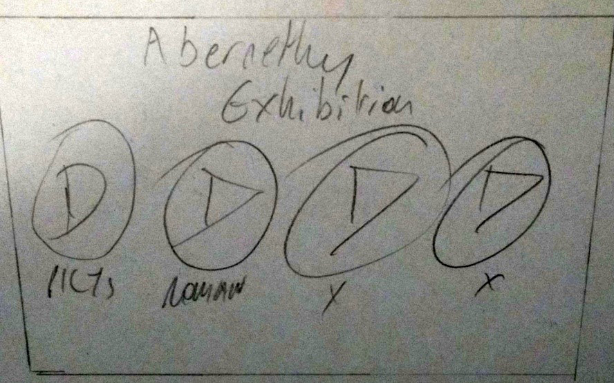
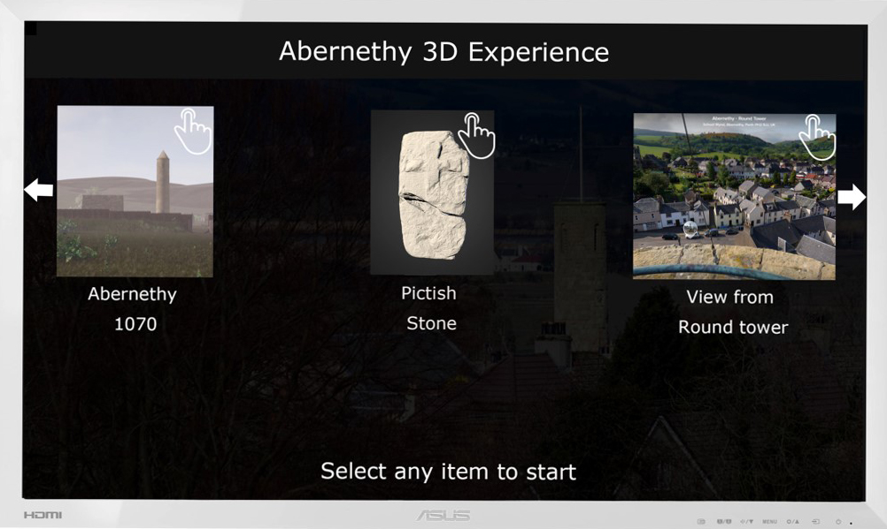
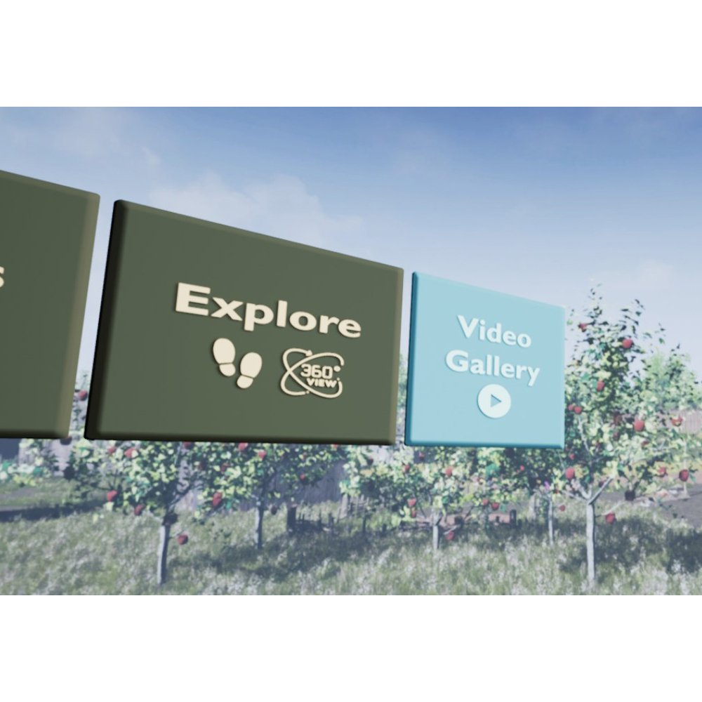

Digital Exhibition - User Interface Design
The user interface expanded and evolved over time to include various aspects and remove others. The secondary analysis during the context survey informed the creation of the interface utilising mockups and initial sketches to ensure the refinement and improvement of the process. This design developed ensures the best product that would be feasible within the context of a small Museum.
“User interface (UI) design is the process of making interfaces in software or computerized devices with a focus on looks or style. Designers aim to create designs users will find easy to use and pleasurable. UI design typically refers to graphical user interfaces but also includes others, such as voice-controlled ones” (IDF, 2018).
Sketches
This piece presents a selection of the initial sketches created for the user interface as an exploration of the problem “Sketches are for exploring the possibilities for creating a design” (Hartson et al, 2012, p285). The ideation process facilitates the creation of new and interesting ways to approach the problem and to develop applicable solutions. The first step in the ideation process, sketching, improves the ability to think about different ideas in conjunction and gets them onto a physical surface to allow for further creativity.
Design sketch idea of interface #1
The first example of UI sketch displays a provisional idea for a system based upon larger buttons that are aligned to the different itemization. This system idea would make it clear what options there are for the user to select, albeit not necessarily clear how to select them. This sketch design demonstrated a clear interface, the play buttons were decided on as not being necessarily appropriate for a gallery or a different function. The decision was made when implementing to place the text within the icon. The larger icons with text inside are applied similarly in the final design with more rectangular designs being chosen.
Design sketch idea of interface #2
The second sketch details another design conducted as part of the initial sketching phase. This sketch contains information utilised within the mock-up such as the large image for selection and the arrow buttons for navigation. The large image is in the final prototype build with the selection for the object being utilised with the headset and images rather than with a forward and back arrow, due to the nature of hardware.
These sketches were two of many different sketches created ranging from the user interface to the directional usage of the headset. The information gathered from this ideation process influenced the future project development, utilising aspects of the sketches within the final prototype, demonstrating the benefits of the ideation process.
Mock-Up
Following the sketches and the ideation process, the development of an initial mock-up enabled a better idea of how the interface may look. “Low fidelity prototypes are, as the term implies, prototypes that are not faithful representations of the details of look, feel and behaviour, but rather give high-level, more abstract impressions of the intended design” (Hartson et al, 2012, p396). This mock-up is not interactive but gives a clearer idea of what the exhibition interface may look like. Designed to be as clear as possible regarding how to select the objects for an exhibition.
This mock-up is based upon a touch-based interface when hardware specifications were less clear. The interface would allow one to see the content created without a Virtual Reality headset, the interface improved on the sketches illustrating with the inclusion of the instruction ‘Select any item to start’ and a hand icon to show what the user must do to select. However, some of the same ideas apply to the final model within the virtual reality system with a similar UI present.
From the sketches and the mock-up, there has been refining and simplification of the design to improve the following characteristics:
- Firstly, the design improvements allow for ease of use by an ordinary user.
- There is no requirement to configure the settings by the user or anything prior to loading the project.
- Highlighted boxes make it clearer as to the function of what they do, with haptic feedback to allow users to understand that they are selecting with the virtual reality tool.
- Placement of Information points directly next to the object improves awareness and understanding
Prototype
This section discusses the prototype and the design decisions that have gone into the establishment of the product. The prototype demonstrates how the interface works, the icons remain like the mock-up utilising a rectangular design.
The user interface design within the context of virtual reality is important as there is little feedback to the computer when interacting due to the nature of the system. The emphasis is upon movements the user creates with the head utilising the virtual headset. The design of the prototype is with this criterion in mind to create an engaging system with an easy to use interface. This interface captures aspects of the sites with backgrounds of the 1070 build and clear interfaces that make it clear where to select depending on what the user wishes.
Menu
The menu contains four points, illustrated as follows: 360 View, 3D models, Explore and Video Gallery, the design of the system loads this as the first screen visible. The user can move their head with the utilisation of motion tracking from the cameras to determine where they are pointing. The places to which they are pointing highlight to show a potential choice. The benefit of this system is the quickness of use to understand, users can select an option by holding their position for 5 seconds. This allows the system to know for sure they wish to select this option reducing the chance for potential mistakes.
Menu view from Virtual Reality headset
Conclusion
The main result from the project is a Virtual Reality prototype, with design decisions made throughout determining the User interface and the structure of the architecture. The design decision to set up four points to illustrate distinct aspects of Abernethy facilitates the inclusion of previous work alongside the current work developed.
The project successfully presents a digital exhibit and social archive with 3D models for Abernethy museum. The purpose of the exhibit is to guide a user through the town of Abernethy and its history, utilising a: 1070 build, a 3D model gallery, 360-degree gallery and a cinematic experience. The project demonstrated the design decisions made when creating the system alongside the implementation of those designs. Evaluation of the choices, to understand how the system achieved the objectives set out at the start of the project. Furthermore, the system created illustrates in steps the Unreal framework, applicable for technical users within a museum setting.
The exhibition framework is ready to be utilised within the context of the Abernethy Museum. The extent of content for the system is improvable due to the nature of the system facilitating further storage capacity. Abernethy museum is one of the main focal points for the village, demonstrating the vital nature of the site. Therefore, with this framework in place, they will be able to market themselves more effectively to their intended user base.